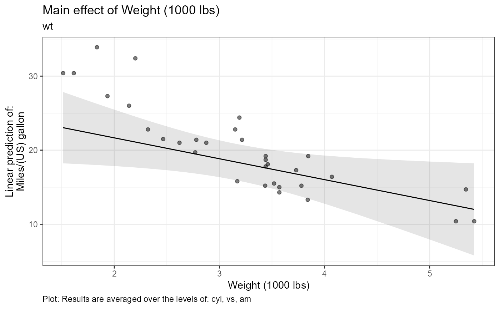
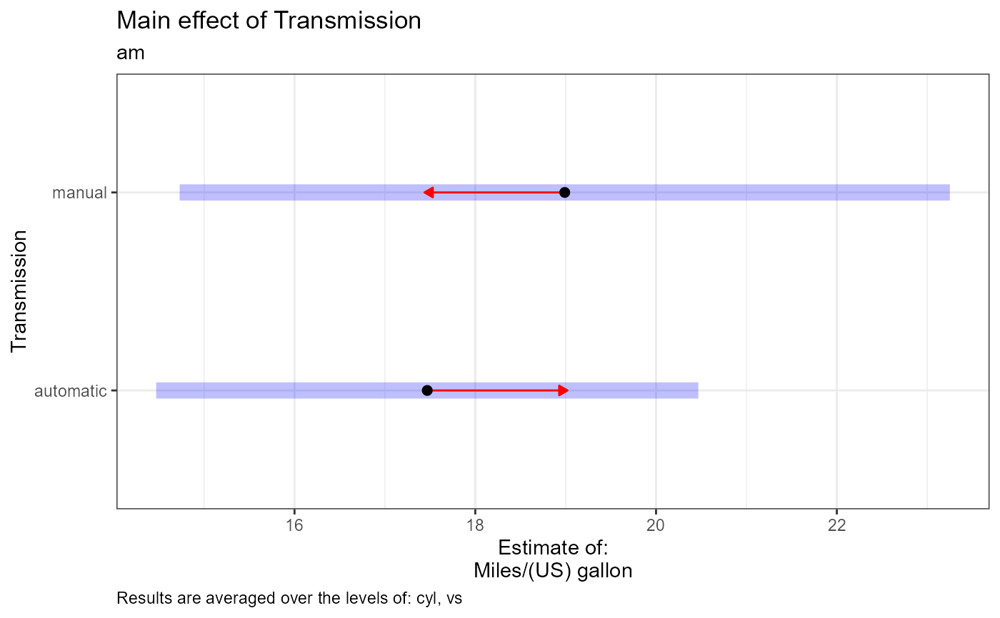
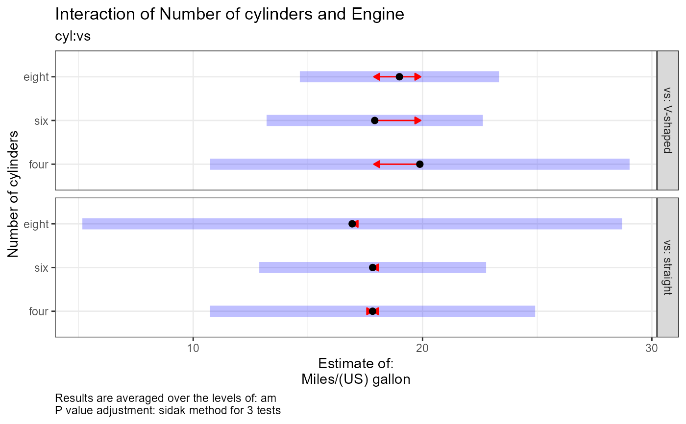
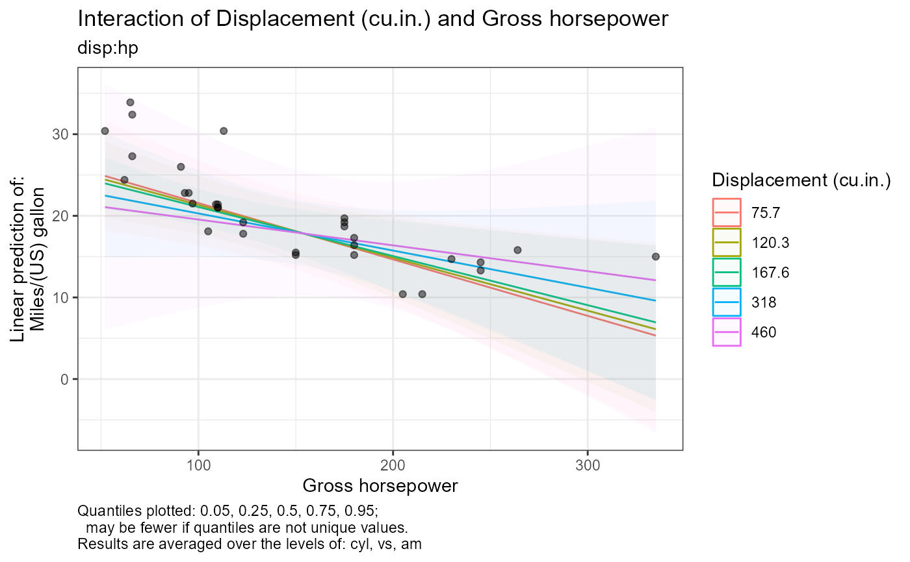

R/e_plot_mod_contrasts.R
e_plot_model_contrasts.RdVariable labels can be provided by labelling your data with the labelled::var_label() command.
e_plot_model_contrasts( fit = NULL, dat_cont = NULL, choose_contrasts = NULL, sw_table_in_plot = TRUE, adjust_method = c("none", "tukey", "scheffe", "sidak", "bonferroni", "dunnettx", "mvt")[4], CI_level = 0.95, sw_print = TRUE, sw_marginal_even_if_interaction = FALSE, sw_TWI_plots_keep = c("singles", "both", "all")[3], sw_TWI_both_orientation = c("wide", "tall")[1], plot_quantiles = c(0.05, 0.25, 0.5, 0.75, 0.95) )
| fit | lm object |
|---|---|
| dat_cont | data used for the lm object (only used for variable labels using labelled::var_label() |
| choose_contrasts | is a list of effects to plot, such as c("hp", "vs:wt"); NULL does all in model. |
| sw_table_in_plot | T/F put table of results in caption of plot |
| adjust_method | see `?emmeans::summary.emmGrid` |
| CI_level | level from `?emmeans::emmeans` |
| sw_print | T/F whether to print results as this function runs |
| sw_marginal_even_if_interaction | T/F whether to also calculate marginal results when involved in interaction(s) |
| sw_TWI_plots_keep | two-way interaction plots are plotted for each variable conditional on the other. Plots are created separately ("singles") or together in a grid ("both"), and "all" keeps the singles and the grid version. |
| sw_TWI_both_orientation | "tall" or "wide" orientation for when both two-way interaction plots are combined in a grid |
| plot_quantiles | quantiles plotted for numeric:numeric interaction plots |
out a list of two lists: "tables" and "plots", each have results for each contrast that was computed. "tables" is a list of emmeans tables to print. "plots" is a list of ggplot objects to plot separately or arrange in a grid.
## Example library(tidyverse) # Data for testing dat_cont <- mtcars %>% as_tibble( rownames = "model" ) %>% mutate( cyl = cyl %>% factor(levels = c(4, 6, 8), labels = c("four", "six", "eight")) , vs = vs %>% factor(levels = c(0, 1), labels = c("V-shaped", "straight")) , am = am %>% factor(levels = c(0, 1), labels = c("automatic", "manual")) ) # Label columns dat_labels <- tribble( ~var , ~label , "model" , "Model" , "mpg" , "Miles/(US) gallon" , "cyl" , "Number of cylinders" , "disp" , "Displacement (cu.in.)" , "hp" , "Gross horsepower" , "drat" , "Rear axle ratio" , "wt" , "Weight (1000 lbs)" , "qsec" , "1/4 mile time" , "vs" , "Engine" # (0 = V-shaped, 1 = straight)" , "am" , "Transmission" # (0 = automatic, 1 = manual)" , "gear" , "Number of forward gears" , "carb" , "Number of carburetors" ) for (i_row in 1:nrow(dat_labels)) { labelled::var_label(dat_cont[[dat_labels[["var"]][i_row] ]]) <- dat_labels[["label"]][i_row] } # Set specific model with some interactions form_model <- mpg ~ cyl + disp + hp + wt + vs + am + cyl:vs + disp:hp + hp:vs fit <- lm( formula = form_model , data = dat_cont ) anova(fit)#> Analysis of Variance Table #> #> Response: mpg #> Df Sum Sq Mean Sq F value Pr(>F) #> cyl 2 824.78 412.39 70.6104 4.755e-10 *** #> disp 1 57.64 57.64 9.8697 0.004927 ** #> hp 1 18.50 18.50 3.1680 0.089572 . #> wt 1 64.99 64.99 11.1278 0.003136 ** #> vs 1 0.65 0.65 0.1116 0.741682 #> am 1 16.39 16.39 2.8055 0.108772 #> cyl:vs 1 0.13 0.13 0.0216 0.884442 #> disp:hp 1 15.31 15.31 2.6217 0.120336 #> hp:vs 1 5.00 5.00 0.8568 0.365152 #> Residuals 21 122.65 5.84 #> --- #> Signif. codes: 0 '***' 0.001 '**' 0.01 '*' 0.05 '.' 0.1 ' ' 1#> #> Call: #> lm(formula = form_model, data = dat_cont) #> #> Residuals: #> Min 1Q Median 3Q Max #> -3.2634 -1.6094 -0.3633 1.3947 3.8193 #> #> Coefficients: (1 not defined because of singularities) #> Estimate Std. Error t value Pr(>|t|) #> (Intercept) 3.598e+01 8.628e+00 4.170 0.000433 *** #> cylsix -1.967e+00 3.313e+00 -0.594 0.559012 #> cyleight -8.898e-01 4.369e+00 -0.204 0.840561 #> disp -1.501e-02 3.403e-02 -0.441 0.663566 #> hp -5.193e-02 5.031e-02 -1.032 0.313707 #> wt -2.821e+00 1.213e+00 -2.326 0.030086 * #> vsstraight 5.149e+00 5.521e+00 0.933 0.361603 #> ammanual 1.521e+00 1.939e+00 0.784 0.441592 #> cylsix:vsstraight 1.970e+00 3.603e+00 0.547 0.590322 #> cyleight:vsstraight NA NA NA NA #> disp:hp 9.752e-05 1.696e-04 0.575 0.571500 #> hp:vsstraight -4.915e-02 5.310e-02 -0.926 0.365152 #> --- #> Signif. codes: 0 '***' 0.001 '**' 0.01 '*' 0.05 '.' 0.1 ' ' 1 #> #> Residual standard error: 2.417 on 21 degrees of freedom #> Multiple R-squared: 0.8911, Adjusted R-squared: 0.8392 #> F-statistic: 17.18 on 10 and 21 DF, p-value: 5.984e-08 #>fit_contrasts <- e_plot_model_contrasts( fit = fit , dat_cont = dat_cont , sw_print = FALSE , sw_table_in_plot = FALSE , sw_TWI_plots_keep = "both" )#>#>#>#>#> Warning: Comparison discrepancy in group "straight", four - six: #> Target overlap = 0.9995, overlap on graph = -101.2269#> Warning: Comparison discrepancy in group "straight", four - six: #> Target overlap = 0.9995, overlap on graph = -104.1881fit_contrasts$tables # to print tables#> $wt #> $wt$est #> wt wt.trend SE df lower.CL upper.CL #> 3.22 -2.82 1.21 21 -5.34 -0.299 #> #> Results are averaged over the levels of: cyl, vs, am #> Confidence level used: 0.95 #> #> #> $am #> $am$est #> am emmean SE df lower.CL upper.CL #> automatic 17.5 1.25 21 14.5 20.5 #> manual 19.0 1.77 21 14.7 23.3 #> #> Results are averaged over the levels of: cyl, vs #> Confidence level used: 0.95 #> Conf-level adjustment: sidak method for 2 estimates #> #> $am$cont #> contrast estimate SE df t.ratio p.value #> automatic - manual -1.52 1.94 21 -0.784 0.4416 #> #> Results are averaged over the levels of: cyl, vs #> #> #> $`cyl:vs` #> $`cyl:vs`$est #> cyl = four: #> vs emmean SE df lower.CL upper.CL #> V-shaped 19.9 3.53 21 11.39 28.4 #> straight 17.8 2.73 21 11.24 24.4 #> #> cyl = six: #> vs emmean SE df lower.CL upper.CL #> V-shaped 17.9 1.82 21 13.54 22.3 #> straight 17.8 1.91 21 13.23 22.4 #> #> cyl = eight: #> vs emmean SE df lower.CL upper.CL #> V-shaped 19.0 1.67 21 14.96 23.0 #> straight 16.9 4.54 21 6.01 27.9 #> #> Results are averaged over the levels of: am #> Confidence level used: 0.95 #> Conf-level adjustment: sidak method for 2 estimates #> #> $`cyl:vs`$cont #> cyl = four: #> contrast estimate SE df t.ratio p.value #> (V-shaped) - straight 2.0601 3.97 21 0.519 0.6095 #> #> cyl = six: #> contrast estimate SE df t.ratio p.value #> (V-shaped) - straight 0.0901 2.82 21 0.032 0.9748 #> #> cyl = eight: #> contrast estimate SE df t.ratio p.value #> (V-shaped) - straight nonEst NA NA NA NA #> #> Results are averaged over the levels of: am #> #> #> $`hp:vs` #> $`hp:vs`$est #> vs hp.trend SE df lower.CL upper.CL #> V-shaped -0.0294 0.0177 21 -0.0662 0.00732 #> straight -0.0786 0.0449 21 -0.1721 0.01490 #> #> Results are averaged over the levels of: cyl, am #> Confidence level used: 0.95 #> #> $`hp:vs`$cont #> contrast estimate SE df t.ratio p.value #> (V-shaped) - straight 0.0491 0.0531 21 0.926 0.3652 #> #> Results are averaged over the levels of: cyl, am #> #>fit_contrasts$plots # to print plots#> $wt#> #> $am#> #> $`cyl:vs` #> $`cyl:vs`$both#> #> #> $`disp:hp` #> $`disp:hp`$both#> #> #> $`hp:vs` #> $`hp:vs`$both#> #>fit_contrasts$text # to print caption text#> $wt #> $wt[[1]] #> [1] "Estimate: 3.21725 = -2.82, 95% CI: (-5.34, -0.299)" #> [2] "Tables: Results are averaged over the levels of: cyl, vs, am" #> [3] "Plot: Results are averaged over the levels of: cyl, disp, hp, vs, am" #> #> $wt[[2]] #> [1] "Estimate: 3.21725 = -2.82, 95% CI: (-5.34, -0.299)" #> [2] "Tables: Confidence level used: 0.95" #> [3] "Plot: Results are averaged over the levels of: cyl, disp, hp, vs, am" #> #> #> $am #> $am[[1]] #> [1] "Estimate: automatic = 17.5, 95% CI: (14.5, 20.5)" #> [2] "Estimate: manual = 19, 95% CI: (14.7, 23.3)" #> [3] "Contrast: automatic - manual = -1.52, p-value = 0.4416" #> [4] "Results are averaged over the levels of: cyl, vs" #> #> #> $`cyl:vs` #> $`cyl:vs`[[1]] #> $`cyl:vs`[[1]][[1]] #> [1] "vs = V-shaped:" #> [2] "Estimate: four = 19.9, 95% CI: (10.7, 29)" #> [3] "Estimate: six = 17.9, 95% CI: (13.2, 22.6)" #> [4] "Estimate: eight = 19, 95% CI: (14.7, 23.3)" #> [5] "vs = straight:" #> [6] "Estimate: four = 17.8, 95% CI: (10.7, 24.9)" #> [7] "Estimate: six = 17.8, 95% CI: (12.9, 22.8)" #> [8] "Estimate: eight = 16.9, 95% CI: (5.17, 28.7)" #> [9] "" #> [10] "vs = V-shaped:" #> [11] "Contrast: four - six = 1.97, p-value = 0.9142" #> [12] "Contrast: four - eight = 0.89, p-value = 0.9959" #> [13] "Contrast: six - eight = -1.08, p-value = 0.9789" #> [14] "vs = straight:" #> [15] "Contrast: four - six = -0.00314, p-value = 1" #> [16] "Contrast: four - eight = NA, p-value = NA" #> [17] "Contrast: six - eight = NA, p-value = NA" #> [18] "" #> [19] "Results are averaged over the levels of: am" #> [20] "P value adjustment: sidak method for 3 tests" #> #> #> $`cyl:vs`[[2]] #> $`cyl:vs`[[2]][[1]] #> [1] "cyl = four:" #> [2] "Estimate: V-shaped = 19.9, 95% CI: (11.4, 28.4)" #> [3] "Estimate: straight = 17.8, 95% CI: (11.2, 24.4)" #> [4] "cyl = six:" #> [5] "Estimate: V-shaped = 17.9, 95% CI: (13.5, 22.3)" #> [6] "Estimate: straight = 17.8, 95% CI: (13.2, 22.4)" #> [7] "cyl = eight:" #> [8] "Estimate: V-shaped = 19, 95% CI: (15, 23)" #> [9] "Estimate: straight = 16.9, 95% CI: (6.01, 27.9)" #> [10] "" #> [11] "cyl = four:" #> [12] "Contrast: (V-shaped) - straight = 2.06, p-value = 0.6095" #> [13] "Contrast: (V-shaped) - straight = 0.0901, p-value = 0.9748" #> [14] "cyl = six:" #> [15] "Contrast: (V-shaped) - straight = NA, p-value = NA" #> [16] "Contrast: NA = NA, p-value = NA" #> [17] "cyl = eight:" #> [18] "Contrast: NA = NA, p-value = NA" #> [19] "Contrast: NA = NA, p-value = NA" #> [20] "" #> [21] "Results are averaged over the levels of: am" #> #> #> #> $`disp:hp` #> $`disp:hp`[[1]] #> $`disp:hp`[[1]][[1]] #> [1] "Quantiles plotted: 0.05, 0.25, 0.5, 0.75, 0.95; may be fewer if quantiles are not unique values." #> [2] "Results are averaged over the levels of: cyl, vs, am" #> #> #> $`disp:hp`[[2]] #> $`disp:hp`[[2]][[1]] #> [1] "Quantiles plotted: 0.05, 0.25, 0.5, 0.75, 0.95; may be fewer if quantiles are not unique values." #> [2] "Results are averaged over the levels of: cyl, vs, am" #> #> #> #> $`hp:vs` #> $`hp:vs`[[1]] #> $`hp:vs`[[1]][[1]] #> [1] "Estimate: V-shaped = -0.0294, 95% CI: (-0.0662, 0.00732)" #> [2] "Estimate: straight = -0.0786, 95% CI: (-0.172, 0.0149)" #> [3] "Contrast: (V-shaped) - straight = 0.0491, p-value = 0.3652" #> [4] "Results are averaged over the levels of: cyl, am" #> #> #> $`hp:vs`[[2]] #> $`hp:vs`[[2]][[1]] #> [1] "Results are averaged over the levels of: cyl, am" #> #> #>